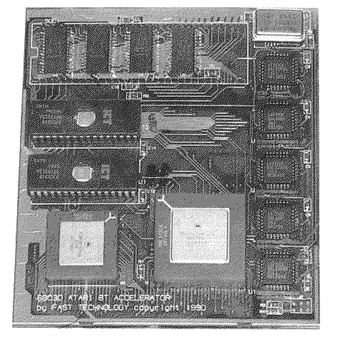

Previous
Next
TOC
CPU Takt 8 oder 16MHz
Cachegröße 32 Kilobyte
16Mhz werden selber generiert
Passt auch in 1040ST Computer, wo die CPU unter der Tastatur sitzt
Neuere Version gibt es auch als 1040STE Version mit FPU Sockel
Mit etwas kampf passt der ICD AdSpeed ST auch in Stacy rein
Die Turbo 30 mit 50MHz von Makro C.D.E (Fast Technology)

CPU und FPU Takt 25/33/40/50MHz (MC68030 CPU und MC68882 FPU)
32 Kilobyte Cache in 30ns schnellen statischen Rams
Modifiertes TOS sitzt in 45ns schnellen 1Megabit Eproms
FPU (MC68882) kann nachgerüstet werden
Optional kann eine MC68000 CPU nachgerüstet werden
weiterblättern
Kapitel Die Beschleunigerboards, Seite 3